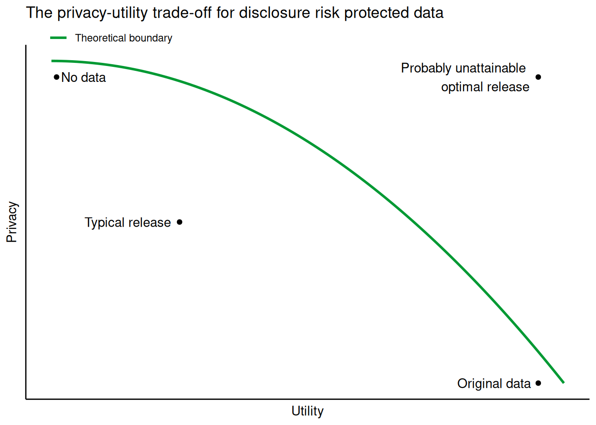

Statistical disclosure control
Introduction
Collected research data often contains sensitive information about individuals. For example, social scientists might collect data on income or criminal behavior, and health data often contains medical information of individuals. Such private information may harm the people involved if disclosed to the public. Even if no harm is incurred, the trust of individuals in the data collector, or scientific institutions in general, may be damaged if such data is revealed. At the same time, broad data availability is very valuable to researchers and governmental institutions alike. Using previously collected data, researchers may answer novel research questions and governmental institutions may improve policy. In addition to these high-level applications, open data can also be used to evaluate the reproducibility of research projects or serve as realistic data in education. That is, open data is valuable for many applications, but simply releasing the data is often not an option.
The first step in the process of releasing data is to anonymize it [TODO: see Data Anonymization tutorial]. Anonymization requires that potentially identifying information is removed from the collected data. Examples of such identifying information are names, addresses, IP-addresses, that can often be removed without losing important information. However, after de-identifying the data, your data might still contain information that can lead to indirect identification of individuals, for example because the data can be linked to external data sources. Especially in today’s age of massive data collection, data sources can be linked in surprising ways. In 2006, researchers from the University of Texas were able to uncover the identity of Netflix users by linking Netflix movie reviews to the Internet Movie Database (IMDb). This might not be a problem for most users, but turned out to be problematic for some. For example, the reviewed movies were quite explicit about some users’ sexual orientation, and revealing this information could put some in an awkward position. To prevent indirect identification, statistical disclosure control can be applied to the data.
Statistical disclosure control
The term “Statistical disclosure control” refers to a suite of statistical methods that aim to protect collected data such that they can be safely released to the public without disclosing confidential information about these individuals. The goal of statistical disclosure control is to release a data set that is as similar as possible to the original data, while at the same time ensuring that no individual can be identified from the released data, nor any sensitive information can be inferred (Hundepool et al. 2024). Disclosure is here defined as the release of information about an individual that would not have become public if the data would be kept private. Two types of disclosure risk are commonly considered:
- Re-identification disclosure occurs when individuals can be singled out from the released data, resulting in confidential data being leaked.
- Attribute disclosure refers to situations in which characteristics of individuals can be learned with (near) certainty from the data release. For example, if a release discloses that all inhabitants of a street in some city are on welfare, knowing that a person lives in this street discloses information on their welfare status.
Every data release requires that both re-identification disclosure and attribute disclosure risks are sufficiently small.
At the same time, the goal of a data release is to allow others to do something useful with the released data, and for this purpose, the released data should be similar to the original data. Similarity, in this context, means that the released, but protected, data can be used for the same purposes as the original data. To a reasonable degree, analyses on the released data should yield results similar to results obtained from the original data. Similarity does not mean that the released records are similar to the original records, but rather that over the whole, the distributions of the observed and released data are similar. Statistical disclosure control often yields a trade-off between privacy and utility: the stricter the data protection, the better the privacy of respondents is protected, but the more information is lost, and the lower the utility of the data.
The level of protection required depends on the data at hand: data from an insensitive experiment with only very general personal information may require very little protection, while an extensive survey on criminal behavior or sensitive issues should typically be well-protected. At the same time, the level of utility required depends on the problem at hand: if the released data should allow to replicate complex analyses to a reasonable degree of accuracy, more sophisticated disclosure methods are required than when solely some marginal quantities (e.g., means and standard deviations) should be preserved. Note that the privacy-utility trade-off is very much relative: a released data set can be very useful for some purposes, but almost useless for others.
Conventional statistical disclosure control methods
In practice, many techniques for statistical disclosure control for microdata (that is, data on individual observations, potentially measured at multiple locations, in contrast to tables with aggregated data) have been developed over the years. Typically, these techniques limit the amount of information that is released, thereby introducing statistical bias and variance (Fienberg and Slavković 2011). For example, one might threshold variables such that extreme values are not released, which typically creates bias in the distribution of the released values. As an other example, adding noise to observed values will increase the variance of the released data relative to the observed data. Common methods that have traditionally been used for statistical disclosure control are (e.g., Reiter 2011; Hundepool et al. 2024):
- Aggregation: collapsing categories into larger overarching categories (e.g., towns into municipalities or regions, divisions into companies).
- Rounding: replacing original values with their rounded counterpart (e.g., income in thousands of euros, age in years).
- Top coding: cap all values higher or lower than some threshold to this threshold (sometimes, only relatively extreme values, such as very large income values, yield a high risk of disclosure).
- Microaggregation: combine observations into groups of some size where people within a group are maximally similar, calculate the group mean for each variable used to form groups, and replace values on these variables by the respective group mean.
- Suppression: remove sensitive or identifying values from the released data directly (this can even be an entire variable).
- Adding noise: random noise is added to the observed values, such that the released value is different from the underlying observed value.
Each of these methods methods either introduce errors in the data, such that the released information cannot be inferred to be entirely accurate, or limits the amount of information that is released in such a way that disclosure risks are small. However, an important limitation of these methods is that relationships between variables are usually not accounted for. While it is possible for some of these approaches to be applied on a multivariate level, this is often not easy and typically not done in practice. Thus, when relationships between variables are of interest, for example when the released data should allow to reproduce regression analyses on the observed data, these traditional methods might distort the data too much. Synthetic data might provide a better solution, as instead of distorting the data, it attempts to model the multivariate distribution of the data, and thus allows to capture relationships between variables. The idea of synthetic data will be more thoroughly explained in the subsequent section.
References
Fienberg, Stephen E., and Aleksandra B. Slavković. 2011. “Data Privacy and Confidentiality.” In International Encyclopedia of Statistical Science, edited by Miodrag Lovric, 342–45. Berlin, Heidelberg: Springer Berlin Heidelberg. https://doi.org/10.1007/978-3-642-04898-2_202.
Hundepool, Anco, Josep Domingo-Ferrer, Luisa Franconi, Sarah Giessing, Rainer Lenz, Jane Naylor, Eric Schulte Nordholt, et al. 2024. Handbook on Statistical Disclosure Control.
Reiter, Jerome P. 2011. “Statistical Approaches to Protecting Confidentiality in Public Use Data.” In International Encyclopedia of Statistical Science, edited by Miodrag Lovric, 1386–88. Berlin, Heidelberg: Springer Berlin Heidelberg. https://doi.org/10.1007/978-3-642-04898-2_537.